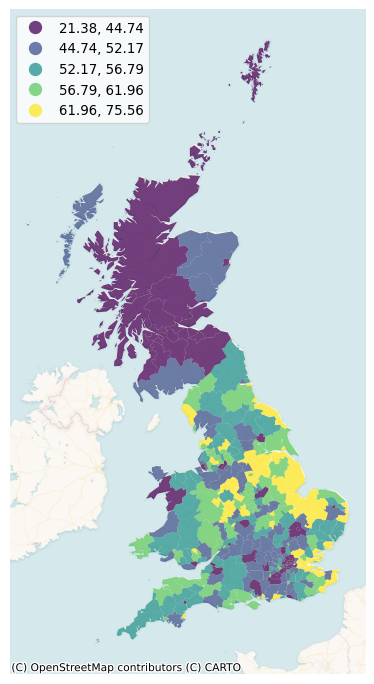
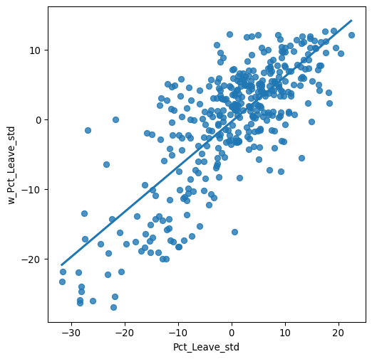
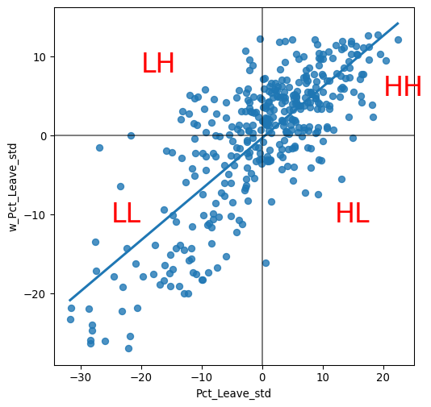
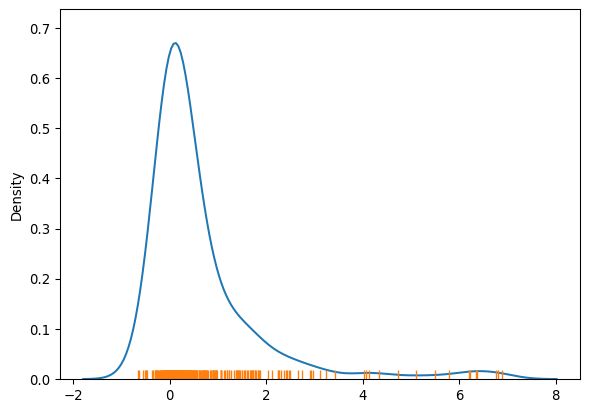
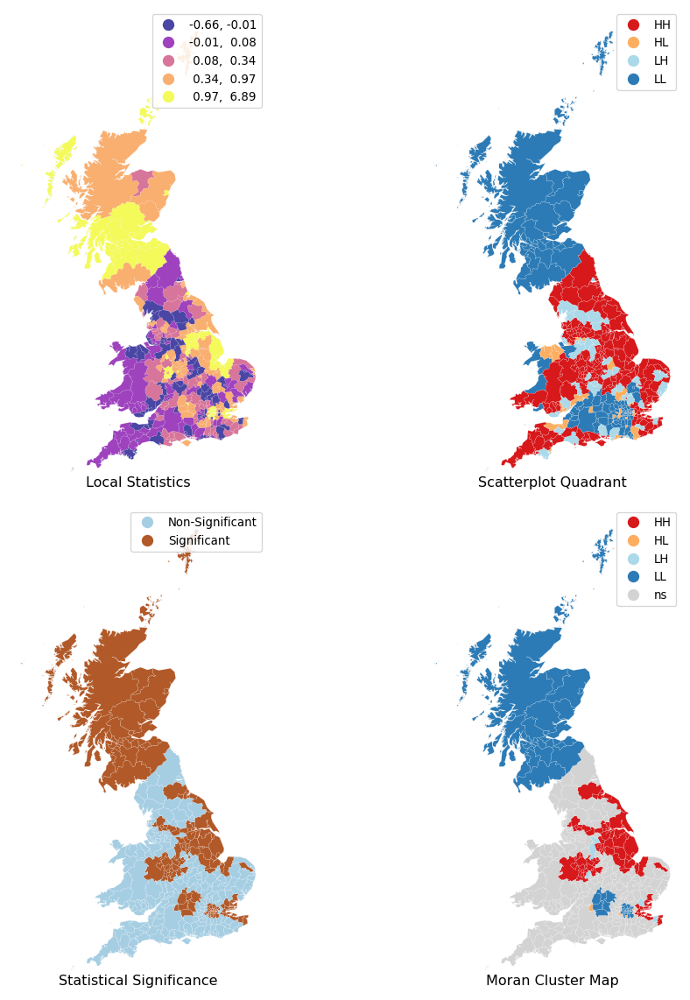
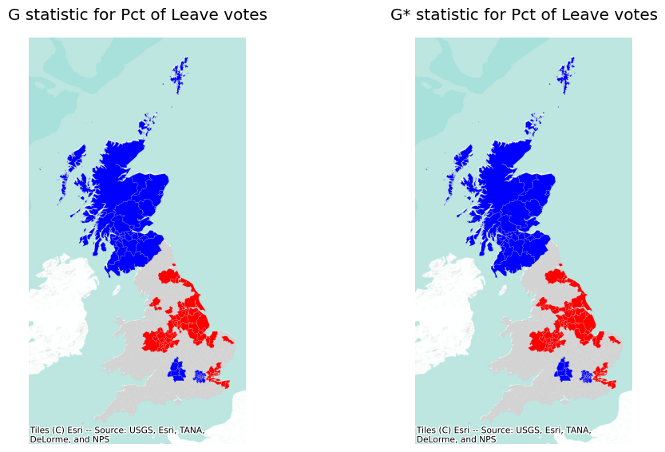
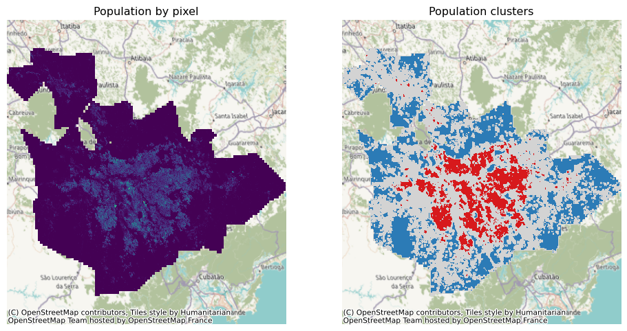

import matplotlib.pyplot as plt # Graphics
from matplotlib import colors
import seaborn # Graphics
import geopandas # Spatial data manipulation
import pandas # Tabular data manipulation
import rioxarray # Surface data manipulation
import xarray # Surface data manipulation
import esda # Exploratory Spatial analytics
from libpysal import weights # Spatial weights
import contextily # Background tiles9 Local Spatial Autocorrelation
In the previous chapter, we explored how global measures of spatial autocorrelation can help us determine whether the overall spatial distribution of our phenomenon of interest is compatible with a geographically random process. These statistics are useful: the presence of spatial autocorrelation has important implications for subsequent statistical analysis. From a substantive perspective, spatial autocorrelation could reflect the operation of processes that generate association between the values in nearby locations. This could represent spillovers, where outcomes at one site influence other sites; or it could indicate contagion, where outcomes at one site causally influence other sites. As we will see later in Chapter 11, it could simply be the result of systematic spatial variation (or, as we will call it then, heterogeneity). Spatial autocorrelation also sometimes arises from data measurement and processing. In this case, the dependence is a form of non-random noise rather than due to substantive processes. For example, when “down-sampling” geographic data, sometimes large patches of identical values can be created. These may only be artifacts of the interpolation, rather than substantive autocorrelation. Regardless of whether the spatial autocorrelation is due to substantive or nuisance sources, it is a form of non-randomness that complicates statistical analysis. For these reasons, the ability to determine whether spatial autocorrelation is present in a geographically referenced data set is a critical component of the geographic data science toolbox.
Despite their importance, global measures of spatial autocorrelation are “whole map” statistics. They provide a single summary for an entire data set. For example, Moran’s \(I\) is a good tool to summarize a dataset into a single value that captures the degree of geographical clustering (or dispersion, if negative). However, Moran’s \(I\) does not indicate areas within the map where specific types of values (e.g., high, low) are clustered, or instances of explicit dispersion. In other words, Moran’s I can tell us whether values in our map cluster together (or disperse) overall, but it will not inform us about where specific clusters (or outliers) are.
In this chapter, we introduce local measures of spatial autocorrelation. Local measures of spatial autocorrelation focus on the relationships between each observation and its surroundings, rather than providing a single summary of these relationships across the map. In this sense, they are not summary statistics but scores that allow us to learn more about the spatial structure in our data. The general intuition behind the metrics however is similar to that of global ones. Some of them are even mathematically connected, where the global version can be decomposed into a collection of local ones. One such example are Local Indicators of Spatial Association (LISAs) (Anselin 1995), which we use to build the understanding of local spatial autocorrelation, and on which we spend a good part of the chapter. Once such concepts are clarified, we introduce a couple of alternative statistics that present complementary information or allow us to obtain similar insights for categorical data. Although very often these statistics are used with data expressed in geo-tables, there is nothing fundamentally connecting the two. In fact, the application of these methods to large surfaces is a promising area of work. For that reason, we close the chapter with an illustration of how one can run these statistics on data stored as surfaces.
9.1 An empirical illustration: the EU Referendum
We continue with the same dataset about Brexit voting that we examined in the previous chapter, and thus we utilize the same imports and initial data preparation steps:
We read the vote data as a non-spatial table:
ref = pandas.read_csv(
"../data/brexit/brexit_vote.csv", index_col="Area_Code"
)And the spatial geometries for the local authority districts in Great Britain:
lads = geopandas.read_file(
"../data/brexit/local_authority_districts.geojson"
).set_index("lad16cd")Then, we “trim” the DataFrame so it retains only what we know we will need, reproject it to spherical mercator, and drop rows with missing data:
db = (
geopandas.GeoDataFrame(
lads.join(ref[["Pct_Leave"]]), crs=lads.crs
)
.to_crs(epsg=3857)[
["objectid", "lad16nm", "Pct_Leave", "geometry"]
]
.dropna()
)
db.info()<class 'geopandas.geodataframe.GeoDataFrame'>
Index: 380 entries, E06000001 to W06000023
Data columns (total 4 columns):
# Column Non-Null Count Dtype
--- ------ -------------- -----
0 objectid 380 non-null int32
1 lad16nm 380 non-null str
2 Pct_Leave 380 non-null float64
3 geometry 380 non-null geometry
dtypes: float64(1), geometry(1), int32(1), str(1)
memory usage: 20.9 KBAlthough there are several variables that could be considered, we will focus on Pct_Leave, which measures the proportion of votes in the UK Local Authority that wanted to Leave the European Union. With these elements, we can generate a choropleth to get a quick sense of the spatial distribution of the data we will be analyzing. Note how we use some visual tweaks (e.g., transparency through the alpha attribute) to make the final plot easier to read in Figure 1:
# Set up figure and a single axis
f, ax = plt.subplots(1, figsize=(9, 9))
# Build choropleth
db.plot(
column="Pct_Leave",
cmap="viridis",
scheme="quantiles",
k=5,
edgecolor="white",
linewidth=0.0,
alpha=0.75,
legend=True,
legend_kwds=dict(loc=2),
ax=ax,
)
# Add basemap
contextily.add_basemap(
ax,
crs=db.crs,
source=contextily.providers.CartoDB.VoyagerNoLabels,
)
# Remove axes
ax.set_axis_off();
As in the previous chapter, we require a spatial weights matrix to implement our statistic. Here, we will use eight nearest neighbors for the sake of the example, but the discussion in the earlier chapter on weights applies in this context, and other criteria would be valid too. We also row-standardize them:
# Generate W from the GeoDataFrame
w = weights.distance.KNN.from_dataframe(db, k=8)
# Row-standardization
w.transform = "R"9.2 Motivating local spatial autocorrelation
To better understand the underpinnings of local spatial autocorrelation, we return to the Moran Plot as a graphical tool. In this context, it is more intuitive to represent the data in a standardized form, as it will allow us to more easily discern a typology of spatial structure. Let us first calculate the spatial lag of our variable of interest:
db["w_Pct_Leave"] = weights.lag_spatial(w, db['Pct_Leave'])And their respective centered versions, where we subtract the average off of every value:
db["Pct_Leave_std"] = db["Pct_Leave"] - db["Pct_Leave"].mean()
db["w_Pct_Leave_std"] = weights.lag_spatial(w, db['Pct_Leave_std'])Technically speaking, creating a Moran scatterplot is very similar to creating any other scatterplot. We have also done this before in Chapter 6. To see this again, we can make Figure 2:
# Set up the figure and axis
f, ax = plt.subplots(1, figsize=(6, 6))
# Plot values
seaborn.regplot(
x="Pct_Leave_std", y="w_Pct_Leave_std", data=db, ci=None
)
plt.show()
Using standardized values, we can immediately divide each variable (percentage that voted to leave, and its spatial lag) in two groups: those with above-average leave voting, which have positive standardized values; and those with below-average leave voting, which feature negative standardized values. Applying this thinking to both the percentage to leave and its spatial lag, divides a Moran scatterplot into four quadrants. Each of them captures a situation based on whether a given area displays a value above the mean (high) or below (low) in either the original variable (Pct_Leave) or its spatial lag (w_Pct_Leave_std). Using this terminology, we name the four quadrants as follows: high-high (HH) for the top-right, low-high (LH) for the top-left, low-low (LL) for the bottom-left, and high-low (HL) for the bottom right. Graphically, we can express this in Figure 3:
# Set up the figure and axis
f, ax = plt.subplots(1, figsize=(6, 6))
# Plot values
seaborn.regplot(
x="Pct_Leave_std", y="w_Pct_Leave_std", data=db, ci=None
)
# Add vertical and horizontal lines
plt.axvline(0, c="k", alpha=0.5)
plt.axhline(0, c="k", alpha=0.5)
# Add text labels for each quadrant
plt.text(20, 5, "HH", fontsize=25, c="r")
plt.text(12, -11, "HL", fontsize=25, c="r")
plt.text(-20, 8.0, "LH", fontsize=25, c="r")
plt.text(-25, -11.0, "LL", fontsize=25, c="r")
# Display
plt.show()
9.3 Local Moran’s \(I_i\)
One way to look at the figure above is as a classification of each observation in the dataset depending on its value and that of its neighbors. Furthermore, this classification is exhaustive: every point is assigned a label. But remember local measures help us to identify areas of unusual concentration of values. Clusters will represent values of one type that are unlikely to appear under the assumption of spatial randomness. To know whether each location belongs to a statistically significant cluster of a given kind, we thus need to compare it with what we would expect if the data were allocated over space in a completely random way. However, what we are interested in is whether the strength with which the values are concentrated is unusually high. This is exactly what LISAs are designed to do. A detailed description of the statistical underpinnings of LISAs is beyond the scope of this chapter. If you would like to delve deeper into the math and probability challenges arising, a good recent reference is (Sauer et al. 2021). In this context, we will provide some intuition about how they work in one LISA statistic, the local Moran’s \(I_i\).
The core idea of a local Moran’s \(I_i\) is to identify cases in which the value of an observation and the average of its surroundings is either more similar (HH or LL in the scatterplot from Figure 3) or dissimilar (HL, LH) than we would expect from pure chance. The mechanism to do this is similar to the one in the global Moran’s I, but it is applied in this case to each observation. This results in as many statistics as original observations. The formal representation of the statistic can be written as:
\[ I_i = \dfrac{z_i}{m_2} \displaystyle\sum_j w_{ij} z_j \; ; \; m_2 = \dfrac{\sum_i z_i^2}{n} \]
where \(m_2\) is the second moment (variance) of the distribution of values in the data, \(z_i = y_i - \bar{y}\), \(w_{i,j}\) is the spatial weight for the pair of observations \(i\) and \(j\), and \(n\) is the number of observations.
LISAs are widely used in many fields to identify geographical clusters of values or find geographical outliers. They are a useful tool that can quickly return areas in which values are concentrated and provide suggestive evidence about the processes that might be at work. For these reasons, they have a prime place in the geographic data science toolbox. Among many other applications, LISAs have been used to identify geographical clusters of poverty (Dawson et al. 2018), map ethnic enclaves (Johnston, Poulsen, and Forrest 2010), delineate areas of particularly high/low economic activity (Torres-Preciado, Polanco-Gaytán, and Tinoco-Zermeno 2014), or identify clusters of contagious disease (Zhang et al. 2020). The Local Moran’s \(I_i\) statistic is only one of a wide variety of LISAs that can be used on many different types of spatial data.
In Python, we can calculate LISAs in a very streamlined way thanks to esda. To compute local Moran statistics, we use the Moran_Local function:
lisa = esda.moran.Moran_Local(db["Pct_Leave"], w)We need to pass the variable of interest—proportion of Leave votes in this context—and the spatial weights that describes the neighborhood relations between the different areas that make up the dataset. This creates a LISA object (lisa) that has a number of attributes of interest. The local indicators themselves are in the Is attribute and we can get a sense of their distribution using seaborn’s kernel density estimate plotting, as in Figure 4:
# Draw KDE line
ax = seaborn.kdeplot(lisa.Is)
# Add one small bar (rug) for each observation
# along horizontal axis
seaborn.rugplot(lisa.Is, ax=ax);
The figure reveals a rather skewed distribution of local Moran’s \(I_i\) statistics. This outcome is due to the dominance of positive forms of spatial association, implying most of the local statistic values will be positive. Here it is important to keep in mind that the high positive values arise from value similarity in space, and this can be due to either high values being next to high values or low values next to low values. The local \(I_i\) values alone cannot distinguish these two cases.
The values in the left tail of the density represent locations displaying negative spatial association. There are also two forms, a high value surrounded by low values, or a low value surrounded by high-valued neighboring observations. And, again, the \(I_i\) statistic cannot distinguish between the two cases.
Because of their very nature, looking at the numerical result of LISAs is not always the most useful way to exploit all the information they can provide. Remember we are calculating a statistic for every single observation in the data so, if we have many of them, it will be difficult to extract any meaningful pattern. In this context, a choropleth can help. At first glance, this may seem to suggest that a choropleth of the \(I_i\) values would be a useful way to visualize the spatial distribution. We can see such map in the top-left panel of the figure below and, while it tells us whether the local association is positive (HH/LL) or negative (HL/LH), it cannot tell, for example, whether the yellow areas in Scotland are similar to those in the eastern cluster of yellow areas. Are the two experiencing similar patterns of spatial association, or is one of them HH and the other LL? Also, we know that values around zero will not be statistically significant. Which local statistics are thus significant and which ones non-significant from a statistical point of view? In other words, which ones can be considered statistical clusters and which ones mere noise?
To answer these questions, we need to bring in additional information that we have computed when calculating the LISA statistics. We do this in four acts. The first one we have already mentioned: a straighforward choropleth of the local statistic of each area. The other three include information on the quadrant each area is assigned into, whether the statistic is considered significant or not, and a combination of those two in a single so-called cluster map. A handy tool in this context is the splot library, part of the Pysal family, which provides a lightweight visualization layer for spatial statistics:
from splot import esda as esdaplotWith all pieces in place, let’s first get busy building the figure:
# Set up figure and axes
f, axs = plt.subplots(nrows=2, ncols=2, figsize=(12, 12))
# Make the axes accessible with single indexing
axs = axs.flatten()
# Subplot 1 #
# Choropleth of local statistics
# Grab first axis in the figure
ax = axs[0]
# Assign new column with local statistics on-the-fly
db.assign(
Is=lisa.Is
# Plot choropleth of local statistics
).plot(
column="Is",
cmap="plasma",
scheme="quantiles",
k=5,
edgecolor="white",
linewidth=0.1,
alpha=0.75,
legend=True,
ax=ax,
)
# Subplot 2 #
# Quadrant categories
# Grab second axis of local statistics
ax = axs[1]
# Plot Quadrant colors (note to ensure all polygons are assigned a
# quadrant, we "trick" the function by setting significance level to
# 1 so all observations are treated as "significant" and thus assigned
# a quadrant color
esdaplot.lisa_cluster(lisa, db, p=1, ax=ax)
# Subplot 3 #
# Significance map
# Grab third axis of local statistics
ax = axs[2]
#
# Find out significant observations
labels = pandas.Series(
1 * (lisa.p_sim < 0.05), # Assign 1 if significant, 0 otherwise
index=db.index # Use the index in the original data
# Recode 1 to "Significant and 0 to "Non-significant"
).map({1: "Significant", 0: "Non-Significant"})
# Assign labels to `db` on the fly
db.assign(
cl=labels
# Plot choropleth of (non-)significant areas
).plot(
column="cl",
categorical=True,
k=2,
cmap="Paired",
linewidth=0.1,
edgecolor="white",
legend=True,
ax=ax,
)
# Subplot 4 #
# Cluster map
# Grab second axis of local statistics
ax = axs[3]
# Plot Quadrant colors In this case, we use a 5% significance
# level to select polygons as part of statistically significant
# clusters
esdaplot.lisa_cluster(lisa, db, p=0.05, ax=ax)
# Figure styling #
# Set title to each subplot
for i, ax in enumerate(axs.flatten()):
ax.set_axis_off()
ax.set_title(
[
"Local Statistics",
"Scatterplot Quadrant",
"Statistical Significance",
"Moran Cluster Map",
][i],
y=0,
)
# Tight layout to minimize in-between white space
f.tight_layout()
# Display the figure
plt.show()
The purple and yellow locations in the top-right map in Figure 5 display the largest magnitude (positive and negative values) for the local statistics \(I_i\). Yet, remember this signifies positive spatial autocorrelation, which can be of high or low values. This map thus cannot distinguish between areas with low support for the Brexit vote and those highly in favour.
To distinguish between these two cases, the map in the top-right of Figure 5 shows the location of the LISA statistic in the quadrant of the Moran scatterplot. This indicates whether the positive (or negative) local association exists within a specific quadrant, such as the HH quadrant. This information is recorded in the q attribute of the lisa object:
lisa.q[:10]array([1, 1, 1, 1, 1, 1, 4, 1, 4, 1])The correspondence between the numbers in the q attribute and the actual quadrants is as follows: 1 represents observations in the HH quadrant, 2 those in the LH one, 3 in the LL region, and 4 in the HL quadrant. Comparing the two maps in the top row reveals that the positive local association in Scotland is due to low support for Brexit, while the positive local association in the south is among local authorities that strongly support Brexit. Overall, we can obtain counts of areas in each quadrant as follows:
counts = pandas.Series(lisa.q).value_counts()
counts1 183
3 113
2 50
4 34
Name: count, dtype: int64Showing that the high-high (1), and low-low (3), values are predominant. Care must be taken, however, in the interpretation of these first two maps, as the underlying statistical significance of the local values has not been considered. We have simply mapped the raw LISA value alongside the quadrant in which the local statistic resides. To statistical significance, the bottom-left map distinguishes those polygons whose pseudo-\(p\)-value is above (“Non-Significant”) or below (“Significant”) the threshold value of 5% we use in this context. An examination of the map suggests that quite a few local authorities have local statistics that are small enough so as to be compatible with pure chance.
Therefore, in order to focus on the areas that are most promising, we need to include significance information alongside the quadrant and local statistic. Together, this “cluster map” (as it is usually called) extracts significant observations -those that are highly unlikely to have come from pure chance- and plots them with a specific color depending on their quadrant category. All of the needed pieces are contained inside the lisa object we have created above and, if passed in tandem with the geo-table containing the geographies it relates to, splot will make a cluster map for us.
Reading the clustermap reveals a few interesting aspects that would have been hard to grasp by looking at the other maps only and that are arguably more relevant for an analysis of the data. First, fewer than half of polygons have degrees of local spatial association strong enough to reject the idea of pure chance:
(lisa.p_sim < 0.05).sum() * 100 / len(lisa.p_sim)np.float64(40.526315789473685)A little over 41% of the local authorities are considered, by this analysis, to be part of a spatial cluster. Second, we identify three clear areas of low support for leaving the EU: Scotland, London, and the area around Oxford (North-West of London). And third, although there appeared to be many areas with concentrated values indicating high support, it is only the region in the North-East and West of England whose spatial concentration shows enough strength to reasonably rule out pure chance.
Before we move on from the LISA statistics, let’s dive into a bit of the data engineering required to “export” significance levels and other information, as well as dig a bit further into what these numbers represent. The latter are useful if we need to work with them as part of a broader data pipeline. So far, cluster maps have been handled by splot, but there is quite a bit that happens under the hood. If we needed to recreate one of its maps, or to use this information in a different context, we would need to extract them out of our lisa object, and link them up to the original db table. Here is one way you can do this.
First, we pull the information computed in lisa and insert it in the main data table:
# Assign pseudo P-values to `db`
db["p-sim"] = lisa.p_sim
# `1` if significant (at 5% confidence level), `0` otherwise
sig = 1 * (lisa.p_sim < 0.05)
# Assign significance flag to `db`
db["sig"] = sig
# Print top of the table to inspect
db[["sig", "p-sim"]].head()| sig | p-sim | |
|---|---|---|
| lad16cd | ||
| E06000001 | 1 | 0.006 |
| E06000002 | 1 | 0.005 |
| E06000003 | 1 | 0.009 |
| E06000004 | 1 | 0.007 |
| E06000010 | 1 | 0.010 |
# Print bottom of the table to inspect
db[["sig", "p-sim"]].tail()| sig | p-sim | |
|---|---|---|
| lad16cd | ||
| W06000018 | 0 | 0.498 |
| W06000019 | 0 | 0.485 |
| W06000021 | 0 | 0.482 |
| W06000022 | 0 | 0.356 |
| W06000023 | 0 | 0.282 |
Thus, the first five values are statistically significant, while the last five observations are not.
Let us stop for a second on these two steps. First, we consider the sig column. Akin to global Moran’s I, esda automatically computes a pseudo-\(p\)-value for each LISA. Because some instances of the LISA statistics may not be statistically significant, we want to identify those with a p-value small enough that rules out the possibility of obtaining a similar value in random maps. A few different ways of generating random maps are considered by esda, but we focus on a strategy that actually simulates hundreds of thousands of random maps to get a rough idea of the possible local statistic values at each local authority given the data we saw. In addition, we follow a similar reasoning as with global Moran’s I and use 5% as the threshold for statistical significance. To identify these values, we create a variable, sig, that contains True if the p-value of the observation satisfies the condition, and False otherwise.
Next, we construct our quadrant values using the q attribute which records the Moran Scatterplot quadrant for each local value. However, we now mask these values using the newly created binary significance measure sig, so only observations in a quadrant that are considered significant are labeled as part of that given quadrant. The remainder are labeled as non-significant.
# Pick as part of a quadrant only significant polygons,
# assign `0` otherwise (Non-significant polygons)
spots = lisa.q * sig
# Mapping from value to name (as a dict)
spots_labels = {
0: "Non-Significant",
1: "HH",
2: "LH",
3: "LL",
4: "HL",
}
# Create column in `db` with labels for each polygon
db["labels"] = pandas.Series(
# First initialise a Series using values and `db` index
spots,
index=db.index
# Then map each value to corresponding label based
# on the `spots_labels` mapping
).map(spots_labels)
# Print top for inspection
db["labels"].head()lad16cd
E06000001 HH
E06000002 HH
E06000003 HH
E06000004 HH
E06000010 HH
Name: labels, dtype: strThese cluster labels are meaningful if you know of the Moran Plot. To help making them a bit more intuitive, a terminology that is sometimes used goes as follows. Positive forms of local spatial autocorrelation are of two types. First, HH observations, which we can term as “hot spots”, represent areas where values at the site and its surroundings are larger than average. Second, LL observations, significant clusters of low values surrounded by low values, are sometimes referred to as “cold spots”. Negative forms of local spatial autocorrelation also include two cases. When the focal observation displays low values but its surroundings have high values (LH), we call them “doughnuts”. Conversely, areas with high values but neighbored by others with low values (HL) can be referred to as “diamonds in the rough”. We note this terminology is purely mnemonic, but recognize in some cases it can help in remembering the interpretation of local statistics.
After building these new columns, analysis on the overall trends of LISA statistics is more straightforward than from the lisa object. For example, an overview of the distribution of labels is one line away:
db["labels"].value_counts()labels
Non-Significant 226
HH 74
LL 70
LH 6
HL 4
Name: count, dtype: int64This shows, for one, that most local statistics are not statistically significant. Among those that are, we see many more hotspots/coldspots than doughnuts/diamonds-in-the-rough. This is consistent with the skew we saw in the distribution of local statistics earlier.
9.4 Getis and Ord’s local statistics
Similar to the global case, there are more local indicators of spatial correlation than the local Moran’s I. esda includes Getis and Ord’s \(G_i\)-type statistics. These are a different kind of local statistic that are commonly used in two forms: the \(G_i\) statistic, which omits the value at a site in its local summary, and the \(G_i^*\), which includes the site’s own value in the local summary. The way to calculate them also follows similar patterns as with the Local Moran’s \(I_i\) statistics above. Let us see how that would look like for our Brexit example:
# Gi
go_i = esda.getisord.G_Local(db["Pct_Leave"], w)
# Gi*
go_i_star = esda.getisord.G_Local(db["Pct_Leave"], w, star=True)Like all local statistics, it is best to explore Getis and Ord statistics by plotting them on a map. Unlike with LISA though, the \(G\) statistics only allow to identify positive spatial autocorrelation. When standardized, positive values imply clustering of high values, while negative implies grouping of low values. Unfortunately, it is not possible to discern spatial outliers.
Unlike with LISAs, splot does not support visualization of G statistics at this point. To visualize their output, we will instead write a little function that generates the map from the statistic’s output object and its set of associated geometries.
def g_map(g, db, ax):
"""
Create a cluster map
...
Arguments
---------
g : G_Local
Object from the computation of the G statistic
db : GeoDataFrame
Table aligned with values in `g` and containing
the geometries to plot
ax : AxesSubplot
`matplotlib` axis to draw the map on
Returns
-------
ax : AxesSubplot
Axis with the map drawn
"""
ec = "0.8"
# Break observations into significant or not
sig = g.p_sim < 0.05
# Plot non-significant clusters
ns = db.loc[sig == False, "geometry"]
ns.plot(ax=ax, color="lightgrey", edgecolor=ec, linewidth=0.1)
# Plot HH clusters
hh = db.loc[(g.Zs > 0) & (sig == True), "geometry"]
hh.plot(ax=ax, color="red", edgecolor=ec, linewidth=0.1)
# Plot LL clusters
ll = db.loc[(g.Zs < 0) & (sig == True), "geometry"]
ll.plot(ax=ax, color="blue", edgecolor=ec, linewidth=0.1)
# Style and draw
contextily.add_basemap(
ax,
crs=db.crs,
source=contextily.providers.Esri.WorldTerrain,
)
# Flag to add a star to the title if it's G_i*
st = ""
if g.star:
st = "*"
# Add title
ax.set_title(f"G{st} statistic for Pct of Leave votes", size=15)
# Remove axis for aesthetics
ax.set_axis_off()
return axWith this function at hand, generating \(G_i^{(*)}\) cluster maps is as straightforward as it is for LISA outputs through splot in Figure 6:
# Set up figure and axes
f, axs = plt.subplots(1, 2, figsize=(12, 6))
# Loop over the two statistics
for g, ax in zip([go_i, go_i_star], axs.flatten()):
# Generate the statistic's map
ax = g_map(g, db, ax)
# Tight layout to minimise blank spaces
f.tight_layout()
# Render
plt.show()
In this case, the results are virtually the same for \(G_i\) and \(G_i^*\). Also, at first glance, these maps appear to be visually similar to the final LISA map from above. Naturally, this leads to the question: why use the \(G_i\) statistics at all? The answer to this question is that the two sets of local statistics, local \(I\) and local \(G_i\), are complementary statistics. The local \(I_i\) statistic (on its own) gives an indication of cluster/outlier status, and the local \(G_i\) shows which side of the hotspot/coldspot divide the observation is on. Alternatively, the local Moran’s \(I_i\) cluster map provides both pieces of information, but it can be more challenging to visualize all at once. Thus, it depends on your analytical preferences and the point of the analysis at hand.
9.5 Bonus: local statistics on surfaces
Before we wrap up the chapter, we are going to cover an illustration that, conceptually, is very similar to the topics we have seen above but, from a technical standpoint, has a bit of a different spin. We will learn how to compute local Moran’s \(I_i\) on data that are stored as a surface, rather than as a geo-table (as we have seen above). As we have seen earlier in the book, more and more data for which we might want to explore local spatial autocorrelation are being provided as surfaces rather than geo-tables. The trick to follow this illustration is to realize that, despite the data structure, surfaces also provide data spatially arranged and that, as such, we can apply the battery of tools we have learned in this chapter to better understand their spatial structure.
Before we start, a note of caution. The functionality required to handle LISA on surfaces is still experimental and a bit rough around the edges. This is because, unlike the case of geo-tables, it has not been a common use-case for geographic data scientists and the tooling ecosystem is not as evolved. Nevertheless, it is an exciting time to get started on this, because a lot is happening in this space, and the basic building blocks to develop a full-fledged ecosystem are already in place. For this reason, we think it is important to cover in this chapter, even though some of the code we will use below is a bit more sophisticated than what we have seen above. Be patient and do not worry if you have to read things twice (or thrice!) before they start making sense. This is getting into geographic data scientist pro territory!
For this case, we will use the GHSL dataset that contains an extract of gridded population for the metropolitan region of Sao Paulo (Brazil). Let us read the data first into a DataArray object:
# Open GeoTIFF file and read into `xarray.DataArray`
pop = rioxarray.open_rasterio("../data/ghsl/ghsl_sao_paulo.tif")Next is building a weights matrix that represents the spatial configuration of pixels with values in pop. We will use the same approach as we saw in the chapter on weights:
w_surface_sp = weights.Queen.from_xarray(pop)So far, so good. Now comes the first hairy bit. The weights builder for surfaces automatically generates a matrix with integers (int8 in this case which, roughly speaking, are numbers without a decimal component):
w_surface_sp.sparse.dtypedtype('int8')For the LISA computation, we will need two changes in w_surface_sp. First, the matrix needs to be expressed as floats (roughly speaking, numbers with a decimal component) so we can multiply values and obtain the correct result. Second, we need a W object and, so far, we have a WSP:
type(w_surface_sp)libpysal.weights.weights.WSPWSP objects are a thin version of spatial weights matrices that are optimised for certain computations and are more lightweight in terms of memory requirements (they are great, for example, for spatial econometrics). Unfortunately, to calculate LISA statistics we require a few more bits of information, so we have to convert it into a W object.
We take both steps in the following code snippet:
w_surface_all = weights.WSP2W( # 3.Convert `WSP` object to `W`
weights.WSP( # 2a.Build `WSP` from the float sparse matrix
w_surface_sp.sparse.astype(
float
), # 1.Convert sparse matrix to floats
id_order=w_surface_sp.index.tolist() # 2b. Ensure `W` is indexed
)
)
w_surface_all.index = w_surface_sp.index # 4.Assign index to new `W`There is quite a bit going on in those lines of code, so let’s unpack them:
- The first step (line 3) is to convert the values from integers into floats. To do this, we access the sparse matrix at the core of
w_surface_sp(which holds all the main data) and convert it to floats usingastype. - Then we convert that sparse matrix into a
WSPobject (line 2), which is a thin wrapper, so the operation is quick (we also ensure the resulting object is properly indexed). - Once represented as a
WSP, we can use Pysal again to convert it into a full-fledgedWobject using theWSP2Wutility. This step may take a bit more of computing muscle. - Finally, spatial weights from surfaces include an
indexobject that will help us later return data into a surface data structure. Since this is lost with the transformations, we reattach it in the final line (line 6) from the original object.
This leaves us with a weights object (w_surface) we can work with for the LISA. Next is to recast the values from the original data structure to one that Moran_Local will understand. This happens in the next code snippet:
# Convert `DataArray` to a `pandas.Series`
pop_values = pop.to_series()
# Subset to keep only values that aren't missing
pop_values = pop_values[pop_values != pop.rio.nodata]Note that we do two operations: one is to convert the two-dimensional DataArray surface into a one-dimensional vector in the form of a Series object (pop_values); the second is to filter out values in which, in the surface, contain missing data. In surfaces, this is usually expressed with a rare value rather than with another data type. We can check that in pop, this is negative:
pop.rio.nodatanp.float32(-200.0)One final step: our w_surface_all contains a row and a column for every pixel in pop, including those without a value (i.e., those with nodata). We need to subset it to align it with pop_values:
w_surface = weights.w_subset(w_surface_all, pop_values.index)
w_surface.index = pop_values.indexAt this point, we are ready to run a LISA the same way we have done in the previous chapter when using geo-tables:
# NOTE: this may take a bit longer to run depending on hardware
pop_lisa = esda.moran.Moran_Local(
pop_values.astype(float), w_surface, n_jobs=-1
)Note that, before computing the LISA, we ensure the population values are also expressed as floats and thus in line with those in our spatial weights.
Now that we have computed the LISA, on to visualization. For this, we need to express the results as a surface rather than as a table, for which we will use the bridge built in pysal:
from libpysal.weights import rasterWe are aiming to create a cluster plot. This means we want to display values that are statistically significant in a color aligned with the quadrant of the Moran plot in which they lie. For this, we will create a new Series that intersects the quadrant information with significance. We use a 1% level for the example:
sig_pop = pandas.Series(
pop_lisa.q
* (
pop_lisa.p_sim < 0.01
), # Quadrant of significant at 1% (0 otherwise)
index=pop_values.index, # Index from the Series and aligned with `w_surface`
)The sig_pop object, expressed as a one-dimensional vector, contains the information we would like to recast into a DataArray object. For this conversion, we can use the w2da function, which derives the spatial configuration of each value in sig_pop from w_surface:
# Build `DataArray` from a set of values and weights
lisa_da = raster.w2da(
sig_pop, # Values
w_surface, # Spatial weights
attrs={
"nodatavals": [pop.rio.nodata]
} # Value for missing data
# Add CRS information in a compliant manner
).rio.write_crs(pop.rio.crs)The resulting DataArray only contains missing data pixels (expressed with the same value as the original pop feature), 0 for non-significant pixels, and 1-4 depending on the quadrant for HH, LH, LL, HL significant clusters, same as with the Brexit example before:
lisa_da.to_series().unique()array([-200, 0, 3, 1, 4, 2])We have all the data in the right shape to build the figure. Before we can do that, we need to hardwire the coloring scheme on our own. This is something that we do not have to pay attention to when working with geo-tables thanks to splot. For surfaces, we are not that lucky.
First, we create the colormap to encode clusters with the same colors that splot uses for geo-tables. For that, we need the method in matplotlib that builds a color map from a list of colors:
from matplotlib.colors import ListedColormapWe express the colors we will use as a dictionary mapping the key to the color code:
# LISA colors
lc = {
"ns": "lightgrey", # Values of 0
"HH": "#d7191c", # Values of 1
"LH": "#abd9e9", # Values of 2
"LL": "#2c7bb6", # Values of 3
"HL": "#fdae61", # Values of 4
}With these pieces, we can create the colormap object (shown in Figure 7) that replicates our original local Moran cluster map colors.
lisa_cmap = ListedColormap(
[lc["ns"], lc["HH"], lc["LH"], lc["LL"], lc["HL"]]
)
lisa_cmapfrom_list

under
bad
over
At this point, we have all the pieces we need to build our cluster map. Let’s put them together to build Figure 8:
# Set up figure and axis
f, axs = plt.subplots(1, 2, figsize=(12, 6))
# Subplot 1 #
# Select pixels that do not have the `nodata` value
# (ie. they are not missing data)
pop.where(
pop
!= pop.rio.nodata
# Plot surface with a horizontal colorbar
).plot(
ax=axs[0],
add_colorbar=False, # , cbar_kwargs={"orientation": "horizontal"}
)
# Subplot 2 #
# Select pixels with no missing data and rescale to [0, 1] by
# dividing by 4 (maximum value in `lisa_da`)
(
lisa_da.where(lisa_da != -200)
/ 4
# Plot surface without a colorbar
).plot(cmap=lisa_cmap, ax=axs[1], add_colorbar=False)
# Aesthetics #
# Subplot titles
titles = ["Population by pixel", "Population clusters"]
# Apply the following to each of the two subplots
for i in range(2):
# Keep proportion of axes
axs[i].axis("equal")
# Remove axis
axs[i].set_axis_off()
# Add title
axs[i].set_title(titles[i])
# Add basemap
contextily.add_basemap(axs[i], crs=lisa_da.rio.crs)Ignoring fixed y limits to fulfill fixed data aspect with adjustable data limits.
Ignoring fixed y limits to fulfill fixed data aspect with adjustable data limits.
9.6 Conclusion
Local statistics are one of the most commonly-used tools in the geographic data science toolkit. When used properly, local statistics provide a powerful way to analyze and visualize the structure of geographic data. The Local Moran’s \(I_i\) statistic, as Local Indicator of Spatial Association, summarizes the co-variation between observations and their immediate surroundings. The Getis-Ord local \(G\) statistics, on the other hand, compare the sum of values in the area around each site. Regardless, learning to use local statistics effectively is important for any geographic data scientist, as they are the most common “first brush” geographic statistic for many analyses.
9.7 Questions
- Do the same Local Moran analysis done for
Pct_Leave, but usingPct_Turnout. Is there a geography to how involved people were in different places? Where was turnout percentage (relatively) higher or lower? - Do the same Getis-Ord analysis done for
Pct_Leave, but usingPct_Turnout. - Local Moran statistics are premised on a few distributional assumptions. One well-recognized concern with Moran statistics is when they are estimated for rates. Rate data is distinct from other kinds of data because it embeds the relationship between two quantities: the event and the population. For instance, in the case of Leave voting, the “event” is a person voting leave, and the “population” could be the number of eligible voters, the number of votes cast, or the total number of people. This usually only poses a problem for analysis when the event outcome is somehow dependent on the population.
- Using our past analytical steps, build a new
dbdataframe fromrefandladsthat contains theElectorate,Votes_Cast, andLeavecolumns. - From this new dataframe, make scatterplots of:
- the number of votes cast and the percent leave vote
- the size of the electorate and the percent of leave vote
- Based on your answers to the previous point, does it appear that there is a relationship between the event and the population size? Use
scipy.stats.kendalltauorscipy.stats.pearsonrto confirm your visual intuition. - Using
esda.moran.Moran_Rate, estimate a global Moran’s I that takes into account the rate structure ofPct_Leave, using theElectorateas the population. Is this estimate different from the one obtained without taking into account the rate structure? What about whenVotes_Castis used for the population? - Using
esda.moran.Moran_Local_Rate, estimate local Moran’s I treating Leave data as a rate.- does any site’s local I change? Make a scatterplot of the
lisa.Isyou estimated before and this new rate-based local Moran. - does any site’s local I change their outlier/statistical significance classifications? Use
pandas.crosstabto examine how many classifications change between the two kinds of statistic. Make sure to consider observations’ statistical significances in addition to their quadrant classification.
- does any site’s local I change? Make a scatterplot of the
- Make two maps, side-by-side, of the local statistics without rate correction and with rate correction. Does your interpretation of the maps change depending on the correction?
- Using our past analytical steps, build a new
- Local statistics use permutation-based inference for their significance testing. This means that, to test the statistical significance of a local relationship, values of the observed variable are shuffled around the map. These large numbers of random maps are then used to compare against the observed map. Local inference requires some restrictions on how each shuffle occurs, since each observation must be “fixed” and compared to randomly-shuffle neighboring observations. The distribution of local statistics for each “shuffle” is contained in the
.rlisasattribute of a Local Moran object.- For the first observation, make a
seaborn.distplotof its shuffled local statistics. Add a vertical line to the histogram usingplt.axvline(). - Do the same for the last observation as well.
- Looking only at their permutation distributions, do you expect the first LISA statistic to be statistically-significant? Do you expect the last?
- For the first observation, make a
- LISAs have some amount of fundamental uncertainty due to their estimation. This is called the
standard errorof the statistic.- The standard errors are contained in the
.seI_simattribute. Make a map of the standard errors. Are there any areas of the map that appear to be more uncertain about their local statistics? - compute the standard deviation of each observation’s “shuffle” distribution, contained in the
.rlisasattribute. Verify that the standard deviation of this shuffle distribution is the same as the standard errors inseI_sim.
- The standard errors are contained in the
- Local Getis-Ord statistics come in two forms. As discussed above, Getis-Ord \(G_i\) statistics omit each site from their own local statistic. In contrast, \(G_i^*\) statistics include the site in its own local statistic.
- make a scatterplot of the two types of statistic, contained in
gostats.Zsandgostars.Zsto examine how similar the two forms of the Getis-Ord statistic are. - the two forms of the Getis-Ord statistic differ by their inclusion of the site value, \(y_i\), in the value for the \(G_i\) statistic at that site. So, make a scatterplot of the percent leave variable and the difference of the two statistics. Is there a relationship between the percent leave vote and the difference in the two forms of the Getis-Ord statistic? Confirm this for yourself using
scipy.stats.kendalltauorscipy.stats.pearsonr.
- make a scatterplot of the two types of statistic, contained in
9.8 Next Steps
For more thinking on the foundational methods and concepts in local testing, Fotheringham is a classic:
Fotheringham, A. Stewart. 1997. “Trends in Quantitative Methods I: Stressing the local.” Progress in Human Geography 21(1): 88-96.
More recent discussion on local statistics (in the context of spatial statistics more generally) is provided by Nelson:
Nelson, Trisalyn. “Trends in Spatial Statistics.” The Professional Geographer 64(1): 83-94.